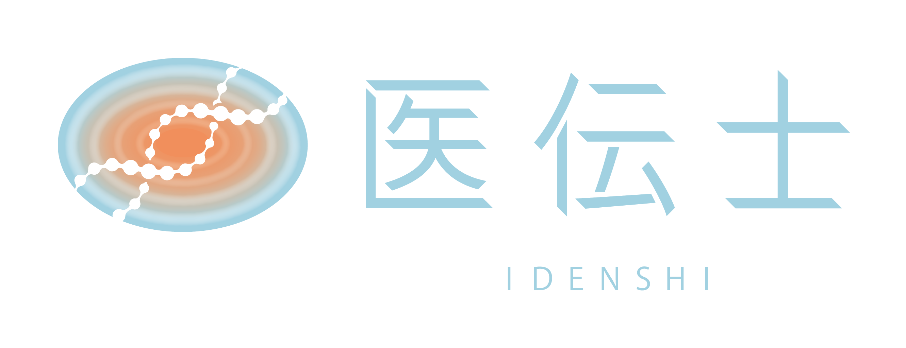

開発者からのメッセージ

宗 大貴（そう ひろたか）
株式会社医伝士
代表取締役医師
代表取締役医師

医療者のQOLと質の高いケアは、
トレードオフになっている。
私たちは、それを技術で解決したい。
日本の医療は長い間、従事者の使命感と献身によって支えられてきました。しかしその構造は、医療者自身のQOLを犠牲にすることで成り立っているという現実に、医師として働く中で直面してきました。
kowairo が目指すのは、単なる記録の効率化ではありません。医療者の負担を減らし、心にゆとりを生み出すことで、患者さんの「その人らしさ」をチームで支える医療の実現です。
現役医師として毎週訪問診療・外来を続けながら、現場の課題を自ら解決するために kowairo を開発しました。現場から生まれた、現場のためのプロダクトです。